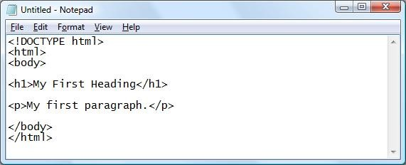

HTML 편집툴
1. html 편집툴
HTML은 다음의 HTML 편집기를 사용하여 편집 할 수 있습니다.
- 어도비 드림위버
- Microsoft Expression Web에서
- CoffeeCup의 HTML 편집기
그러나, HTML을 배우기 위해 꼭 전문툴을 사용할 필요는 없습니다. PC에 설치된 간단한 텍스트 편집기를 사용하여 HTML을 배울 수있습니다.
2. 윈도우즈의 메모장을 이용하여 html 작성
① 메모장(notepad) 실행
② 메모장에 html코드를 입력
